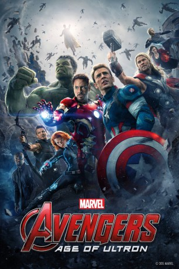

Alternativ: Avengers: Age of Ultron
 
 IMDB-Wertung: 7.5 / 10
IMDB-Wertung: 7.5 / 10  Metascore:
Metascore: 
Milliardär, Lebemann und Genie Tony Stark aka Iron Man will ein inaktives Friedensprogramm in Gang bringen, doch dabei geht etwas schief. So taucht der niederträchtige Roboter-Bösewicht Ultron auf und verfolgt Pläne zur Ausrottung der Menschheit. Nun ist es an den Helden, sich wieder zu sammeln und das schreckliche Schicksal der Welt abzuwenden. Zusammen mit Iron Man treten Thor, Captain America, Hulk, Black Widow und Hawkeye dem fiesen Ultron entgegen und bekommen dabei Unterstützung von den ehemaligen S.H.I.E.L.D.-Agenten Nick Fury und Maria Hill. Außerdem kreuzen die geheimnisvollen und mit besonderen Fähigkeiten ausgestatteten Newcomer Wanda und Pietro Maximoff den Weg der Helden, wie auch ein alter Bekannter in neuer Gestalt: Vision. Die Rächer müssen ihre Kräfte vereinen, unsichere Allianzen schmieden und auf unerwartete Aktionen reagieren, um die Bewohner der Erde einmal mehr vor dem drohenden Untergang zu bewahren.
Jahr: 2015
Dauer: 141 Minuten
FSK: 12
Land: USA Studio: Walt Disney Studios Motion PicturesTonspuren: - ,
Untertitel: Deutsch, Englisch, , , ,
Auflösung: 1080p (1920x1080) Größe: 13004 MB
Genre: Action, Sci-Fi, Abenteuer
Regisseur:  Joss Whedon
Joss Whedon
Drehbuch: Meg Cabot
Soundtrack:
Darsteller:
Datei: X:\Comic-Filme\The Avengers\Marvel's The Avengers 2 Age of Ultron (2015, FSK12, 1920x1080) 3D.mkv seit 09.05.2016
Festplatte: Comicverfilmungen+MusikCD
 Es gibt insgesamt 14 Filme in der Gruppe 'Comic-Filme\The Avengers'
Es gibt insgesamt 14 Filme in der Gruppe 'Comic-Filme\The Avengers'